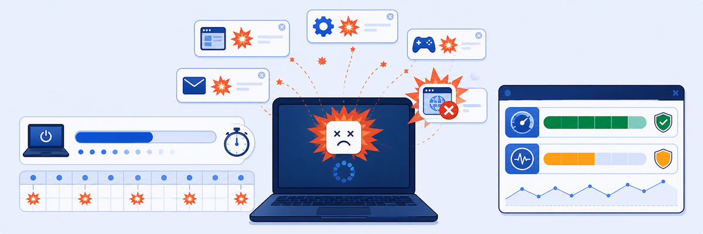

Lab 7: Troubleshooting Device Startup & Software Reliability
Scenario: Joni Sherman (Device: ZPM-JONI-SHERMA) reports frustrating overall PC performance and frequent Chrome crashes. Use ZDX with Intune integration to identify the root cause.

Endpoint Analytics via Intune adds a new dimension to ZDX troubleshooting: device health telemetry that is independent of network activity. When the network is fine but the user is suffering, Endpoint Analytics often reveals why.
- Endpoint Analytics has two score categories: Startup Performance (96/100) and Software Reliability (46/100). Given Joni’s complaint, which category is more relevant to investigate first, and why?
- chrome.exe and msedge.exe are both crashing with the same browser engine version (112.0.5815.13 / 112.0.1722.64). What does this version correlation suggest as a root cause?
- ZDX surfaces Intune Endpoint Analytics data without you accessing Intune directly. What are the operational advantages of having this data in ZDX rather than requiring a separate Intune portal login?
Task 7.1: Analyze CPU Usage
1 Find Joni Sherman and Check Device Health
- Use User Search to find
Joni Sherman. - Scroll down to the Device Health section.
- Click on a point of high CPU Usage to see the Most Impacted Processes popup.
Result: chrome.exe is consuming 94% of the CPU. This would have a significant negative impact on the overall machine performance and user experience.
Task 7.2: View Endpoint Analytics
2 Review Intune Endpoint Analytics Score
- Scroll back up to the User Devices section.
- Click View Endpoint Analytics on the ZPM-JONI-SHERMA device.
- Review the Endpoint Analytics Score (overall) and the Score Categories:
- Startup Performance score
- Software Reliability score
- Examine the Startup Performance Score Over Last 14 Days trend.
Result: Endpoint Analytics Score = 79/100. Startup Performance = 96/100 (acceptable), but Software Reliability = 46/100 (significantly low).
Task 7.3: Examine Startup Performance
3 Review Boot and Sign-in History
- Click the Startup Performance tab.
- Examine the Boot History graph for any unusually long boot times.
- Examine the Sign-in History graph for unusually long sign-in times.
- Review the Top 10 Processes Impacting Startup table.
Note: Boot History shows an average of ~9 seconds to reach the sign-in screen. Sign-in History shows one sign-in of ~35 seconds on 3 May. Overall, startup performance does not appear to be the primary issue.
Task 7.4: Review Software Reliability Events
4 Identify App Crash Events
- Click the Software Reliability tab.
- Examine the Software Events Over Last 14 Days bar chart. Note which days had the most events.
- Review the Software Events table and examine the Event, Time, Name, Publisher, and Version columns.
Result: A large number of App Crash events are recorded in the first 3 days. Both chrome.exe (Google Chrome 112.0.5615.13) and msedge.exe (Microsoft Edge 112.0.1722.64) are crashing frequently. The user’s complaint about Chrome crashes is confirmed, and the Intune data pinpoints the specific versions involved.